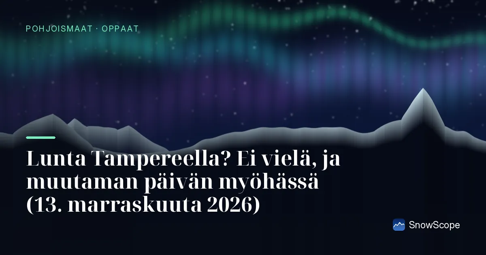

Lunta Tampereella? Ei vielä, ja muutaman päivän myöhässä (13. marraskuuta 2026)
Tampere on edelleen lumitön perjantaina 13 marraskuuta, vaikka pieni lumenpaksuus ilmestyi asemalle alle 50 km päässä yön aikana. Alue on jäljessä tyypillisestä alkatalven rytmistään, mutta pakkanen tulee: kahden viikon sisällä kestävä lumi yleensä saapuu Keski-Suomeen.
Katso kohteen Tampere lumiennuste reaaliajassa SnowScope-sovelluksessaLumensyvyys, puuterihälytykset ja 3D-kartta, ilmaiseksi.
Missä ensimmäiset hiutalet laskeutuivat
Vain yksi mittausasema lähellä Tamperetta mittasi lunta perjantaina: Juupajoki Hyytiälä, 48 km koilliseen, ilmoitti 2 cm. Kaikkialla muualla Tampere-alueella—Nokia Tottijärvellä länteen, Hattulassa ja Hämeenlinnassa etelään—maa oli paljas. Kaupungin omalla säähavaintoasemalla ei ollut lunta.
Nämä ohut 2 cm Hyytiälässä merkitsevät lumirajan pohjoisinta reunaa Suomessa tähän päivään mennessä. 64. leveysastetta etelään lumiraja muuttuu terävä. Todellinen lumipeite ei vielä ulotu Tampereelle, mutta se on lähellä.

Kuinka paljon Tampere on jäljessä?
Lumihistoria 46 edellisestä talvesta osoittaa, että Tampere on viikon päivää jäljessä aikataulusta. 13 marraskuuta maa on ollut valkoinen täsmälleen puolella näistä talvista—23 kertaa. Toisella puolella paljasta maata jatkuu. Tavallinen päivä, jolloin lumi ensimmäisen kerran pysyy, on 10 marraskuuta, joten tänä vuonna kaupunki on noin kolme päivää myöhässä, mikä on hyvin normaalin vaihtelun sisällä.
Pääkohta: kun lumi tulee Tampereelle marraskuun puolivälissä, se saapuu ohut. Lumensyvyyden mediaani tähän päivään mennessä näiden 46 talven osalta on 0 cm. Jopa lumisissa vuosissa 3 cm on raskas lumisade. Lumi paksuuntuu vähitellen koko talven ajan—noin 4 cm 1 joulukuuhun mennessä, 7–8 cm joulukuun puoliväliin mennessä ja noin 18 cm tammikuun puoliväliin mennessä—mutta varhaiset hiutalet ovat harvoja ja hauraita.
Mitä viisi viimeistä talvea kertovat
Viidestä viimeisimmästä Tampereen talvesta vain yksi—2023–24—oli mitattavaa lunta 13 marraskuuta: 3 cm. Neljä muuta talvea (2021–22, 2022–23, 2024–25, 2025–26) alkoivat kaikki paljaalla maalla tähän päivään mennessä, aivan kuten tänään.
Tämä ei ole poikkeuksellista. Tampereen lumisesongin alku on vaihtelevaa. Joina vuosina lumi jää maahan jo marraskuun alussa; toisina se odottaa marraskuun loppuun tai jopa joulukuuhun. Ei ole tärkeää, saapuuko lumi 13:lle, vaan saapuuko se ollenkaan talven aikana. Tammikuuhun mennessä Tampereella on melkein aina valkoinen peite.
Viikonlopun ennuste
Lauantai tuo harmaat pilvet ja lämpötilat tuskin nollan yläpuolella, 0–2 °C. Hieman märkää lunta saattaa pudota päivän aikana, sekoittuen tihkuun, joka yhteensä on alle 1 cm vettä. Kaikki hiutalet, jotka laskeutuvat lämpimälle asfaltille, sulavat. Sunnuntai muuttuu kuivemmaksi ja leudomaksi, nousee noin 6 °C:een, jättäen maan paljaaksi jälleen. Maanantai tuo sadetta liikkumaan, 3–4 mm.
Viikonloppu ei tuo kestävää lunta Tampereelle. Maa on kylmä ja märkä, mutta ei valkoinen. Kuitenkin pakkanen ja märän maan sykli luo riskejä: lehtikerros metsäpoluilla on liukasta, ja pinnat, jotka ovat varjossa myöhään aamuun, voivat pitää jäällä.
Mitä odottaa seuraavaksi
Tampereen ensimmäinen lumi ei ole kaukana. Kahden seuraavan viikon sisällä kylmä ilma yleensä työntää riittävän kauas etelään asettautuakseen lumella kaupungin yli. Kun se saapuu, ensimmäiset muutamat senttimetrit ovat hauraita—osittain sulavia lämpimillä päivillä, jäätyvät yöllä—mutta kuvio on alkanut.
Jos haluat nähdä todellista lunta tämän viikonlopun aikana, Tampere ei ole paikka. Lähin merkittävä valkoinen maa on Oululla, 600 km pohjoiseen, missä asemat mittasivat 7 cm. Rovaniemellä on myös 7–8 cm. Molemmat ovat edelleen varhaisessa kaudessaan eivätkä vielä ole syvyydessään. Tampereen asukkaille kärsivällisyys on ainoa vaihtoehto.
Viikonlopun vaarat paljaalla maalla
Vaikka lunta ei ole, lauantai ja sunnuntai tuovat omansa liukastumisriskeistä. Märät lehdet ja ruoho ovat liukaita poluilla, erityisesti siellä, missä varjo pitää maan kylmänä. Sillat ja korotetut kävelytiet jäätyvät usein ennen avoin aluetta. Varhaiset aamun tunnit ja hämärä ovat vaarallisimmat.
Tampereen ympärillä olevat järvet—Pyhäjärvi ja Näsijärvi—eivät ole vielä jäätyneet. Älä mene mihinkään jäähän, joka muodostuu lahteen; se on liian ohut kestämään painoa. Käytä kiikarihitaiset kengät, jos aiot kävelevyyden tai puistojen puolella viikonlopun aikana.
Vinkkejä laskijoille
- Huomioi musta jää silta pinnoilla ja varjoissa olevien polun reunoissa lauantaiaamulla. Märät lehdet, ei lumi, ovat viikonlopun vaara.
- Järvet ovat edelleen avointa vettä. Kaikki jää lahteen on ohut ja turvaton; pysy poissa.
- Nähdäksesi lunta tämän viikonlopun aikana, aja pohjoiseen Ouluun tai sen yli. Tampereen odotus päättyy kahden viikon sisällä.
- Täällä putoava lumi on ohut ja voi sulaa leudomina jaksona. Todellinen lumisesonki rakentuu joulukuun ja tammikuun aikana.
- Tarkista ennuste uudelleen maanantaina; kuvio voi muuttua, jos Atlantin ilma pysyy heikkona.
Näistä luvuista
Hiihtokeskusten lumensyvyydet ovat syvin lumi keskuksen ylärinteillä näytettynä päivänä; ne ovat arvioita alueelle, eivät mittaus yhdessä pisteessä. Ennusteet voivat muuttua. Lue aina virallinen lumivyöryennuste ennen rinteiden ulkopuolelle lähtöä.
Viittaa tähän raporttiin
Tutkimukseen, opetukseen tai mediaan: luvut ja kaaviot ovat vapaasti käytettävissä CC BY 4.0 -lisenssillä tällä lähdeviitteellä.
SnowScope (2026), Lunta Tampereella? Ei vielä, ja muutaman päivän myöhässä (13. marraskuuta 2026), https://snowscope.app/blog/fi/2026/11/tampere-snow-today-13-november-2026.html, luettu 2026-11-13
SnowScope (Atlas Labs). (2026, November 13). Lunta Tampereella? Ei vielä, ja muutaman päivän myöhässä (13. marraskuuta 2026). SnowScope snow reports. https://snowscope.app/blog/fi/2026/11/tampere-snow-today-13-november-2026.html
BibTeX
@misc{snowscope2026tamperesnowtoday13novemb,
author = {{SnowScope (Atlas Labs)}},
title = {Lunta Tampereella? Ei vielä, ja muutaman päivän myöhässä (13. marraskuuta 2026)},
year = {2026},
month = nov,
howpublished = {\url{https://snowscope.app/blog/fi/2026/11/tampere-snow-today-13-november-2026.html}},
note = {Published 2026-11-14 13:29 UTC; accessed 2026-11-13}
}· CC BY 4.0 · Menetelmät, data ja työkalut →
Seuraa: Tampere
Ilmainen: viesti, kun uutta lunta on tulossa, ja ennuste joka aamu.